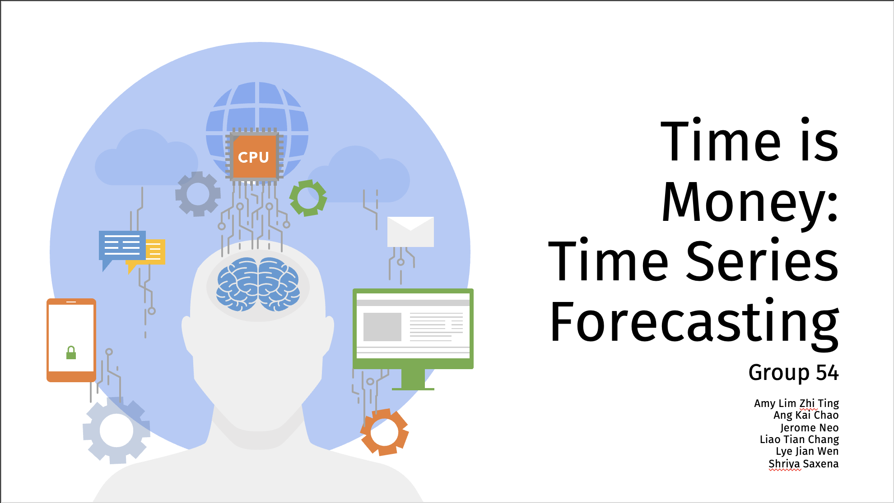

Data Engineering
Stock Prediction

A machine-learning project comparing three forecasting approaches on daily AAPL closing prices: a naive k-nearest-neighbours average as a sanity-check baseline, an auto-tuned ARIMA model, and a stacked LSTM network. Built as a team for NUS's CS3244 (Machine Learning), testing each model across different sampling frequencies (daily/monthly/quarterly) and training-window sizes.
The question
Does a deep sequence model actually beat a well-tuned statistical baseline on noisy financial time series — and does a classical model's advantage depend on how far ahead it's asked to forecast? We put a naive baseline, ARIMA, and an LSTM through the same train/test split on the same data to find out.
Baseline: KNN-style averaging
Following the tsfknn approach, the baseline forecasts each test point as the average of the k most recent training observations, projected flat across the horizon. k was tuned per configuration by sweeping a validation window and minimising RMSE. Run across twelve sampling configurations (5- and 7-year daily/monthly/quarterly history, plus short 30- and 35-point windows), RMSE ranged from 10.7 (30 daily points) to 39.9 (5-year monthly) — a useful floor for judging whether the other two models were learning real structure or just regressing to the mean.
ARIMA: strong one-step, weak multi-step
An ADF test confirmed the raw close-price series was non-stationary (p ≈ 0.99), so pmdarima's auto_arima was used to stepwise-search orders by AIC, settling on ARIMA(0,1,0)(1,0,0)[7] for 5 years of daily AAPL data — a weekly seasonal period reflecting the 5-day trading week. The split revealed a sharp distinction in how the model was evaluated:
- Static forecast (fit once, predict the entire test horizon) — RMSE 32.28. The model's confidence interval balloons the further out it predicts, and it can't react to anything that happens after the fit.
- Walk-forward forecast (predict one day ahead, then refit on the real observed value before predicting the next) — RMSE 1.50, a 20x improvement. Fed the actual close price after each step, the same model becomes a strong short-horizon forecaster.
The gap is the main ARIMA finding: its apparent weakness wasn't the model — it was asking a short-memory statistical model to extrapolate a year out without ever seeing ground truth in between.
LSTM: stacked sequence model
A 3-layer stacked LSTM (50 units each, dropping to a single dense output) was trained on MinMax-scaled closing prices, windowed so the previous 3 days predict the next day's close. Two different definitions of "enough training data" were tested:
- Fixed instances — a constant 30 most-recent data points regardless of calendar range — testing RMSE 3.99.
- Fixed period — all daily data from 2013 onward (far more rows) — testing RMSE 2.34, noticeably better despite a much higher training RMSE, suggesting the longer history helped the model generalise rather than overfit a short recent window.
Takeaways
Both ARIMA and the LSTM comfortably beat the naive KNN-style baseline. Between the two, the comparison depends on the forecasting task: the LSTM's one-day-ahead RMSE (2.3–4.0) was far more consistent than ARIMA's static multi-step forecast, but neither matched ARIMA's walk-forward RMSE of 1.50 — a reminder that a simple statistical model given real feedback at each step can be hard to beat for short-horizon prediction, while a deep model's advantage shows up when it has to generalise over a longer, less-corrected horizon.